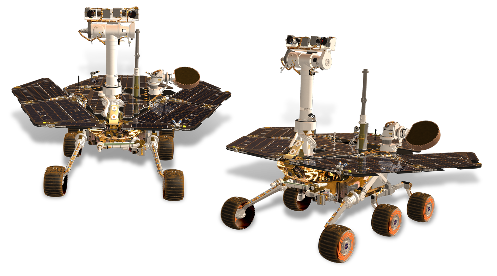

Herbruikbaarheid robots
Millieutoepassing van robots
Voor en nadelen Robotica
Contact
Ruimte robots
Robots hebben nog geen genoeg aan de aarde en zitten nu zelfs al in de ruimte.
Deze robots zijn ideaal om informatie te halen van de ruimte aangezien zei geen zuurstof
nodig hebben in tegenstelling tot de mens. Voornamelijk worden ruimte robots gebruikt
om oppervlakten van verschillende planeten te verkennen zoals de planeet Mars. Deze
robots heten ‘Mars Rovers’ ,
ze boren monsters, voeren analyses uit en halen nog veel meer
informatie van de planeet zodat wetenschappers met die informatie de planeet beter leren
 Tegenwoordig zijn ruimte robots nog niet zo geavanceerd en worden mensen
blootgesteld aan levensgevaarlijke missies zoals het repareren van onderdelen van een
ruimtestation vanaf de buitenkant. Dit wordt in de toekomst waarschijnlijk overgenomen
door robots omdat zij deze taken met veel meer nauwkeurigheid uit kunnen voeren en natuurlijk
is het een stuk minder erg als er een robot verloren gaat in plaats van een mens. Ook wordt er
gewerkt aan robots die ruimte afval gaan opruimen dit heeft verschillende pluspunten, op deze
manier maken we de ruimte een stuk schoner en zorgen we er ook voor dat ruimtestations/satellieten
niet tegen ruimteafval aanvliegen waardoor zij schade oplopen.